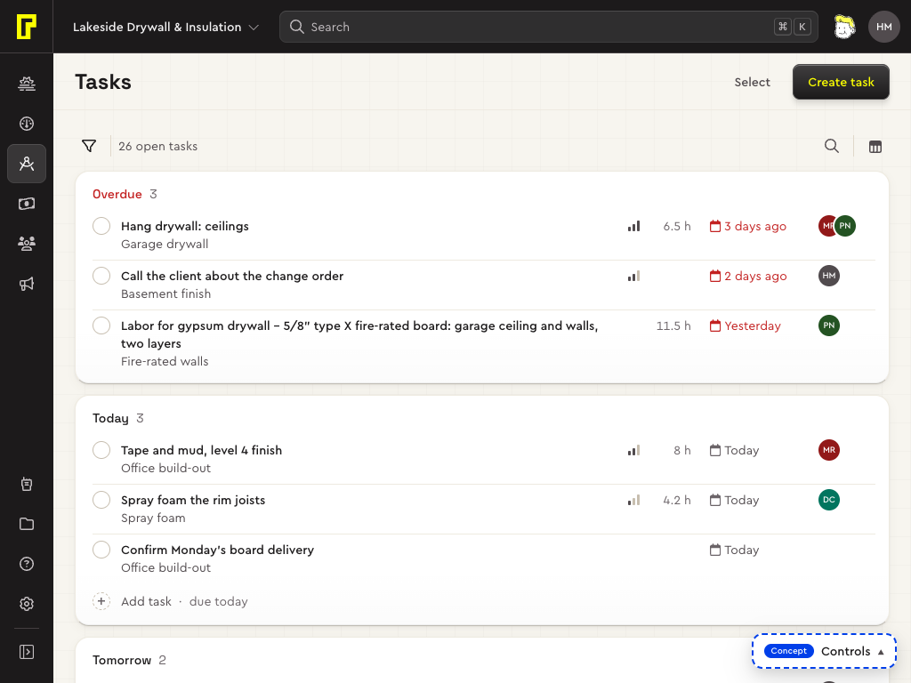
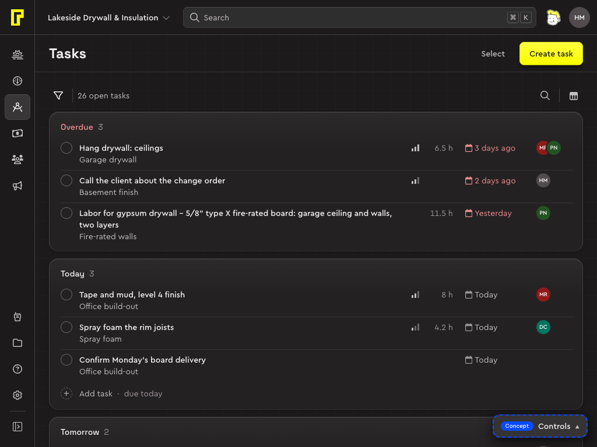

Code
<section class="card list-panel">
<div class="list-toolbar" role="search" aria-label="Search and filter" style="position:static">
<div class="list-bar">
<button type="button" class="button add-filter" data-variant="secondary" data-size="sm" aria-haspopup="menu" aria-expanded="false"><i data-icon="filter"></i><span>Add filter</span></button>
<label class="list-search"><i data-icon="search"></i><input type="search" aria-label="Search jobs" placeholder="Search"></label>
<button type="button" class="button date-range-button" data-variant="secondary" data-size="sm" aria-haspopup="dialog" aria-expanded="false"><i data-icon="calendar"></i><span class="button-value">Last 90 days</span></button>
<span class="list-bar-sep" aria-hidden="true"></span>
<button type="button" class="button" data-variant="ghost" data-size="sm" data-icon-only aria-haspopup="menu" aria-expanded="false" aria-label="Display settings" data-tip="Display settings"><i data-icon="display-settings"></i></button>
</div>
<div class="list-chips">
<p class="result-count"><strong>64</strong> of 132 jobs</p>
<div class="filters">
<span class="chip" data-active><button type="button" class="chip-main" aria-haspopup="dialog"><span class="chip-field">Status:</span><span class="chip-value">Pending, Booked</span></button><button type="button" class="chip-remove" aria-label="Remove status filter" data-tip="Remove status filter"><i data-icon="xmark" data-size="14"></i></button></span>
<button type="button" class="button" data-variant="ghost" data-size="sm">Clear all</button>
</div>
</div>
</div>
</section>A toolbar is how a person finds what they're after in a list, a board or a calendar. It has two groups: what narrows the list (filters, search, dates) on the left, how it's shown (display settings) after a rule on the right. Once anything narrows the list, a second row appears with the count and a chip for each filter.
When to use
- Use the toolbar over any list, board, timeline or calendar people need to narrow. Every page type uses this one, so a filter or a search is always in the same place.
- Use the page header for the page's own actions, such as Create job or Export. They aren't about narrowing the list (App shell).
- Use the floating bar for actions on ticked rows (Floating bar).
Anatomy
| Part | Class | What it does |
|---|---|---|
| Toolbar | .list-toolbar | The whole thing, role="search". Sticks under the page header as the page scrolls, with a rule under it. |
| Bar | .list-bar | The first row. Its controls sit 8 in from the card's corner, so their corners follow the card's (D35). |
| Add filter | .add-filter | A secondary button that opens the list's filters. Pinned ones lead its menu (status, owner, a date), the rest follow (D45). |
| Search | .list-search | A bare field that takes the room left in the row (Search field). |
| Dates | .date-range-button | A secondary button that reads back the period (“Last 90 days”) and opens the date picker (I14). |
| Rule | .list-bar-sep | Parts narrowing from showing. |
| Display settings | a ghost icon button | Opens Group by, Row height, Columns and the like (Popover). |
| Chips row | .list-chips | The count (.result-count), then a chip for each filter that's set, then Clear all. Only while something narrows the list. |
Variants
On a table card
The list pages' toolbar is the head of the table card, as above, and the table's column header sticks under it. Its secondary buttons lie flat on the card (D78).
On the page
Where the content isn't one card (Tasks' groups, the pipeline's board), the toolbar sits on the page. Add filter is an icon there, a ghost like display settings, then a rule and the count; the search is an icon button on the right that opens into its field; a rule, then display settings (D104). Secondary buttons on the page keep their body, as the calendar's do, and the rules are a step stronger than on a card (D83).
Code
<div class="list-toolbar" role="search" aria-label="Search and filter" style="position:static;background:none;border:0">
<div class="list-bar" data-search="button">
<button type="button" class="button add-filter" data-variant="ghost" data-size="sm" data-icon-only aria-haspopup="dialog" aria-expanded="false" aria-label="Add filter" data-tip="Add filter"><i data-icon="filter" data-size="16"></i></button>
<span class="list-bar-sep" aria-hidden="true"></span>
<p class="result-count">26 open tasks</p>
<label class="list-search"><i data-icon="search" data-size="16"></i><input type="search" id="tb-page-search" aria-label="Search tasks" placeholder="Search"></label>
<button type="button" class="button list-search-open" data-variant="ghost" data-size="sm" data-icon-only aria-label="Search" aria-controls="tb-page-search" aria-expanded="false" data-tip="Search"><i data-icon="search" data-size="16"></i></button>
<span class="list-bar-sep" aria-hidden="true"></span>
<button type="button" class="button" data-variant="ghost" data-size="sm" data-icon-only aria-haspopup="menu" aria-expanded="false" aria-label="Display settings" data-tip="Display settings"><i data-icon="display-settings" data-size="16"></i></button>
</div>
</div>

The search button (.list-bar[data-search="button"]) is one control: shut, the field is the button's size under it; opened, the field grows leftwards, its magnifier riding its edge, and shrinks back the same way. It stays open while it holds words; Escape empties and closes it. The script that wires it is the shell's (BolsterShell.searchButton).
With pickers: the calendar
The calendar's toolbar adds its pickers to the same row: the view as a segmented control, then Show and People, buttons that read back their value and end in a chevron (“Everything ⌄”, “Everyone ⌄”), what you're looking at in one group. A rule, then Unscheduled, which opens a part of the work beside the calendar rather than filtering it (D80).


Filters and chips
- The toolbar shows Add filter and the filters that are applied, never empty ones (D45).
- A set filter is a chip: its field and value open its picker again, its × removes it. In the lists a search becomes a chip too.
- Clear all follows the chips and brings back the whole list. After a × or Clear all, focus goes to Add filter, unless the page names a better place (Chip).
- The count (“64 of 132 jobs”) stands a chip tall, so the row opens once, not again when the chip arrives.
- The chips, Clear all and Add filter's menu are defined once, in the shell, for every page (D126). The pattern is in Filtering.
On phones
- Add filter shrinks to its icon and becomes a ghost, like display settings beside it (D78).
- The date button shows only its value, and gives way before the search field does.
- The count and the chips stay on one line that scrolls sideways, its edge fading while there's more, so a chip never takes two lines (D103).


Usage
Content
- The search's placeholder is “Search”; its accessible name says what it searches (“Search jobs”, “Search the pipeline”).
- The count names the thing: “64 of 132 jobs”, the number shown in full ink.
- A chip reads “Field: value”, several values joined by commas (“Status: Pending, Booked”).
- A picker's button says its value, not its name: “Last 90 days”, “Everyone”. Its name goes to screen readers (“Show: Everything”).
Accessibility
- The toolbar is
role="search"with a label (“Search and filter”). - Buttons that open something say so (
aria-haspopup,aria-expanded); icon-only ones have anaria-labeland a tooltip with the same words. - The search field is a
labelaround its icon and input, so clicking anywhere in it focuses the input. Its focus ring goes round the whole field. - The count can be a live region (
aria-live="polite"), so a screen reader hears how many rows a filter left. - Each chip's × is named after its filter (“Remove status filter”).
Code
| Class or attribute | What it does |
|---|---|
.list-toolbar | The toolbar; sticks at --list-toolbar-top, which the shell sets as the bars hide and come back. |
.list-bar | The first row. |
.list-bar[data-search="button"] | The search as a button that opens into its field; data-search-open while it's open. |
.list-search | The bare search field. |
.list-bar-sep | The rule between groups. It reads the surface: the card's line on a card, the stronger line on the page (D83). |
.add-filter, .date-range-button | Secondary buttons with toolbar behaviour on phones. |
.list-chips, .result-count, .filters | The second row: the count, then the chips. |
<div class="list-toolbar" role="search" aria-label="Search and filter">
<div class="list-bar">
<button class="button add-filter" data-variant="secondary" data-size="sm" aria-haspopup="menu">…<span>Add filter</span></button>
<label class="list-search">…<input type="search" aria-label="Search jobs" placeholder="Search"></label>
<button class="button date-range-button" data-variant="secondary" data-size="sm" aria-haspopup="dialog">…<span class="button-value">All time</span></button>
<span class="list-bar-sep" aria-hidden="true"></span>
<button class="button" data-variant="ghost" data-size="sm" data-icon-only aria-label="Display settings" data-tip="Display settings">…</button>
</div>
<div class="list-chips" hidden><p class="result-count">…</p><div class="filters">…chips…</div></div>
</div>Tokens
| Token | Preview | Value | Use |
|---|---|---|---|
--color-surface-hover-control | Lightcement-300Darkpitch-black-900 | hover inside menus, popovers and the table card's header: a step stronger, since it sits on white | |
--color-line-default | Lightmix(cement-500 50%, pitch-black-200)Darkpitch-black-800 | ||
--color-line-card | Lightcement-400Darkpitch-black-800 | the edge of cards, menus and popovers |
| Token | Value | Use |
|---|---|---|
--control-height-sm | 2rem | 32 |
--inset-card | calc(radius-card - radius-control) | Nested corners (D35): something rounded sitting in a rounded corner shares that corner's centre, so its radius is the outer one minus the gap between their edges (r = R − d), the gap the same across and down. These are the gaps, from the outer edge; the padding is the gap less the border. |
Every variant and state
Its specimen, live: the same markup and CSS a page uses, working (point, press, type), in this page's theme.
system/specimens/toolbar.html, the component's workbench · Open it on its ownWhat's still open
- On the page, Add filter is an icon-only ghost (D104), copied into pipeline.css and todo.css instead of living in toolbar.css.
- toolbar.css still carries .field-button for the estimate concept (D78), to remove when it moves to the secondary button.
Decisions and contracts
- D35Nested corners share a centreDecided
- D45Default sort and filters decided; pinned filters lead Add filter's menuDecided
- D78The field button folds into secondary; the surface decides its bodyDecided
- D80The calendar's toolbar: pickers with chevrons, the view beside them, a ruleDecided
- D83A toolbar's rule is stronger on the pageDecided
- D103The polish pass's bigger ones, your callsTrying out
- D104The pipeline's Lost column, its toolbar as Tasks', jobs that openTrying out
- D126Nested menus and filter chips, the shell's
- I14Picking dates
- I23Page scrolling